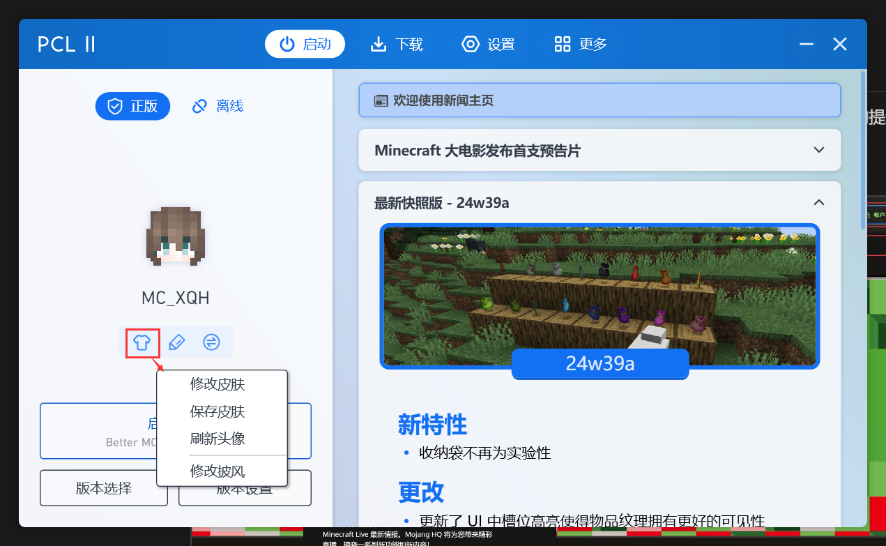
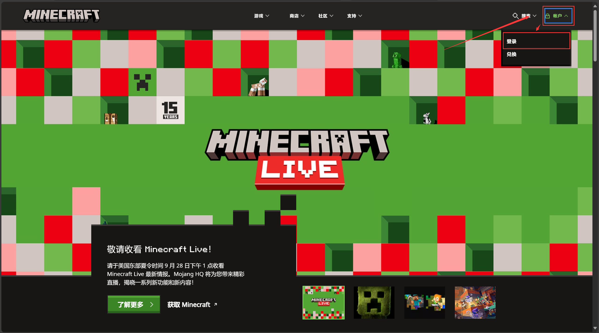
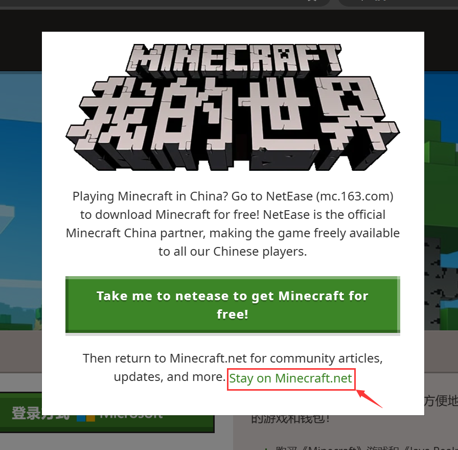

Java版的皮肤文件是一个大小**6464**像素的png图片文件，你可以前往NameMC或是其他皮肤网站上下载由其他玩家制作的皮肤。
*披风是由Mojang官方发放给玩家的奖励，通常具有绝版性质。
在PCL2启动器登录正版账户之后，将鼠标指针移至玩家头像，点击下方浮现的 衣服 图标，即可更换皮肤和披风。
点击下方浮现的 铅笔 图标，即可跳转至Minecraft官网上的玩家名更改的界面。

进入Minecraft官网（https://www.minecraft.net/），开始会弹出一个 提示前往下载中国版的提示 的页面，点击下方 继续浏览该网站 即可关闭。
之后点击左上角的 账户，点击 登录。

若有弹出这个窗口，点击 “Stay on Minecraft.net” 这行绿字即可关闭该窗口。接下来就根据网站的引导来登录你的微软账号。

登录完后，转到Java版的玩家档案里。
点击 更换皮肤。
先选择你的玩家模型。classic 模型的手臂模型会粗一点（44），即对应 史蒂夫Steve 模型，slim 模型的手臂会更细一点（43），即对应 艾利克斯Alex 模型。
选择完后，点击上次皮肤图片文件。
你可以在下面更换你拥有的披风。
点击 档案名称。之后填写你修改后的玩家名即可。
另外，玩家名修改有30天的冷却时间，且这30天内，旧的玩家名不能被其他玩家使用。
仍有不理解的地方或问题？在文章的相应位置评论留言↑↑↑
或在Github上反馈文章问题。